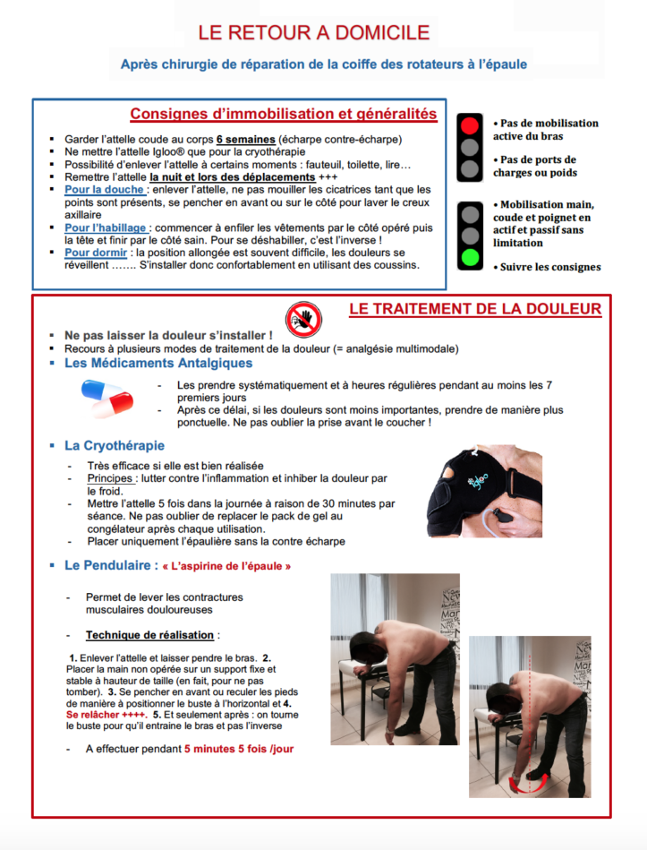

Pathologies de la coiffe des rotateurs.

La coiffe des rotateurs est composée de quatre tendons (sous-scapulaire en avant, sus-épineux en haut et sous-épineux et petit rond en arrière), auxquels il faut ajouter le tendon du long biceps qui coulisse en avant dans une gouttière située entre deux tendons. Ils proviennent de muscles reliant l’omoplate à la tête de l’humérus où ils sont solidement fixés à l’os. Leur rôle est de permettre les rotations du bras et d’assurer la mobilisation des bras au-dessus de l’horizontale.
Opération de la coiffe des rotateurs :
Avant l’opération :
Les tendons de la coiffe ont tendance à s’user avec le temps ou après sollicitation excessive de l’épaule (gestes répétitifs, travail des bras au-dessus de l’horizontale)
- L’évolution se fait progressivement vers un détachement des tendons de l’os de la tête de l’humérus, on parlera alors de rupture de la coiffe des rotateurs (« trou dans la coiffe des rotateurs »). Lorsque les tendons souffrent mais restent attachés à l’os, on parlera de tendinopathies ou « tendinite » de la coiffe.
- Les douleurs sont fréquentes, peuvent être plus ou moins intenses ou permanentes selon les cas et surviennent préférentiellement la nuit. Dans la majorité des cas, les mouvements volontaires de l’épaule ne sont pas limités, même en présence d’une rupture de la coiffe. Il existe habituellement, dans ce cas, une perte de force lors de la levée du bras au-dessus de l’horizontale.
- Après un examen clinique complet et lecture des radiographies simples d’épaule réalisées de manière systématique, le médecin pourra demander des examens complémentaires pour préciser l’état des tendons de la coiffe : échographie, arthro-IRM, arthroscanner (injection d’un produit dans l’articulation pour les deux derniers) ou IRM.
- La première étape du traitement comprend la réalisation de séances de kinésithérapie spécifique et adaptée à la pathologie de la coiffe, éventuellement associée à une ou deux infiltrations de l’épaule.
- Pour que le chirurgien décide avec son patient d’une intervention chirurgicale sur son épaule, il faut à la fois un échec du traitement médical bien conduit depuis plusieurs mois, imagerie de la coiffe des rotateurs complète et une épaule souple.
- En présence d’une rupture traumatique chez un patient jeune, actif et sportif, l’indication chirurgicale pourra être prise très rapidement.

Pendant l’opération :
- L’intervention est réalisée sous arthroscopie (technique utilisant une caméra sans grande ouverture de l’épaule). La durée est variable en fonction du nombre et de l’importance des gestes réalisés (de 10 minutes à plus de 2 heures) : geste unique sur le long biceps, acromioplastie ( rabotage de l’os du plafond osseux), débridement, réparation de la coiffe…
- Le traitement chirurgical sera adapté aux plaintes décrites par le patient, aux résultats de l’examen clinique et à l’état de la coiffe des rotateurs
- S’il existe une rupture de la coiffe des rotateurs, le traitement dépendra de l’importance de la rupture (nombre de tendons atteints, rétraction des extrémités tendineuses), de la qualité des muscles de la coiffe et du patient (âge, état général, motivation, activités de loisirs et sports…). La réparation n’est pas toujours systématique et reste parfois impossible en cas de ruptures massives.
- La réparation a pour but la refixation des tendons sur la tête de l’humérus, où ils sont normalement insérés, à l’aide d’ancres fichées dans l’os. Des fils passent dans ces ancres et permettent ainsi de ramener et de plaquer le tendon sur l’os pour favoriser la cicatrisation.
Vidéo de la chirurgie de l’articulation de l’épaule sous arthroscopie:
(attention certaines images sont à éviter pour les personnes sensibles)La réinsertion dite « en double rang » de la coiffe des rotateurs par arthroscopie est une technique fiable et éprouvée de réparation de ces tendons rompus. Elle permet de soulager les douleurs, de redonner de la mobilité et de la force à l’épaule. Elle présente en outre l’avantage d’être effectuée de façon mini-invasive n’engendrant que peu de cicatrices.
Résumer du video
Après l’opération :
- L’épaule est immobilisée après l’intervention à l’aide d’une attelle confortable maintenant le bras le long du corps et le coude plié (écharpe contre écharpe).
- La durée d’immobilisation dépend des types de gestes réalisés sous arthroscopie (de 1 à 6 semaines).
- L’autorééducation de l’épaule est immédiate selon le protocole prescrit et donné par le chirurgien. La rééducation peut être débutée dès le lendemain de l’intervention ou être différée de 3 à 4 semaines en cas de réparation de la coiffe et elle se poursuit en centre ou à domicile avec l’aide d’un masseur-kinésithérapeute sur une période de 3 à 6 mois en fonction des gestes arthroscopiques réalisés et de la récupération du patient. L’objectif premier de la rééducation étant de récupérer une épaule souple.
- L’hospitalisation est ambulatoire dans plus de 70% des cas ou dure un jour avec une nuit d’hospitalisation le soir de l’intervention
Le retour à domicile :
Une intervention chirurgicale reste toujours un événement angoissant pour lequel il vaut mieux appréhender en amont les difficultés liées au retour à domicile avec tout son lot de questionnements : Comment vais-je faire ? Qu’est-ce que je peux faire ? Quelles sont les consignes ?… Vous trouverez en lien un exemple d’une fiche de consignes postopératoires donnée après réparation de la coiffe des rotateurs.
